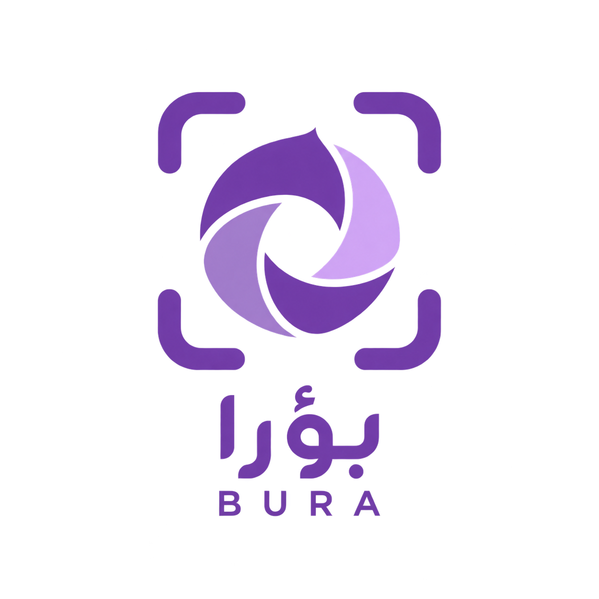

GRADUATION PROJECT
BURA / بؤرا
Real-time Arabic photography guidance — a graduation project in development.
IN DEVELOPMENT
Better guidance before the shot.
BURA is a team graduation project exploring a mobile application that provides real-time Arabic guidance before taking photos, including lighting, camera angle and the subject’s pose.
My contribution
My work includes literature review, coordinating assigned sections of requirements research, and preparing a survey to understand photography habits and user needs.
01
Research
Literature review and user needs.
02
Development
Application work is in progress.
03
Project showcase
Screenshots, the project report and code links will be added when ready.